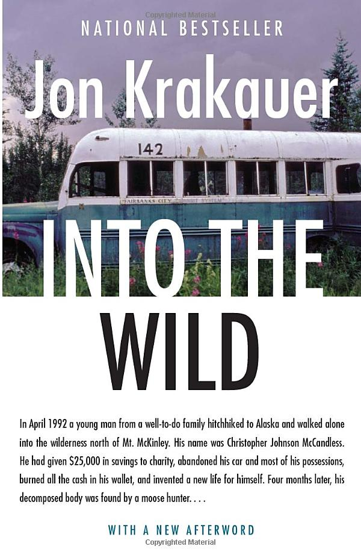
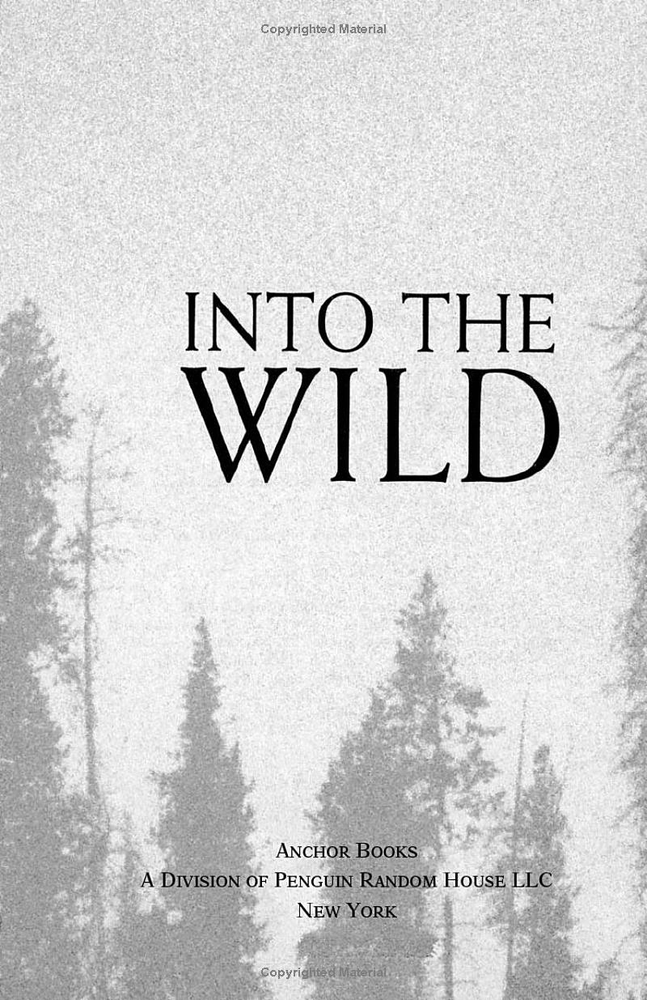
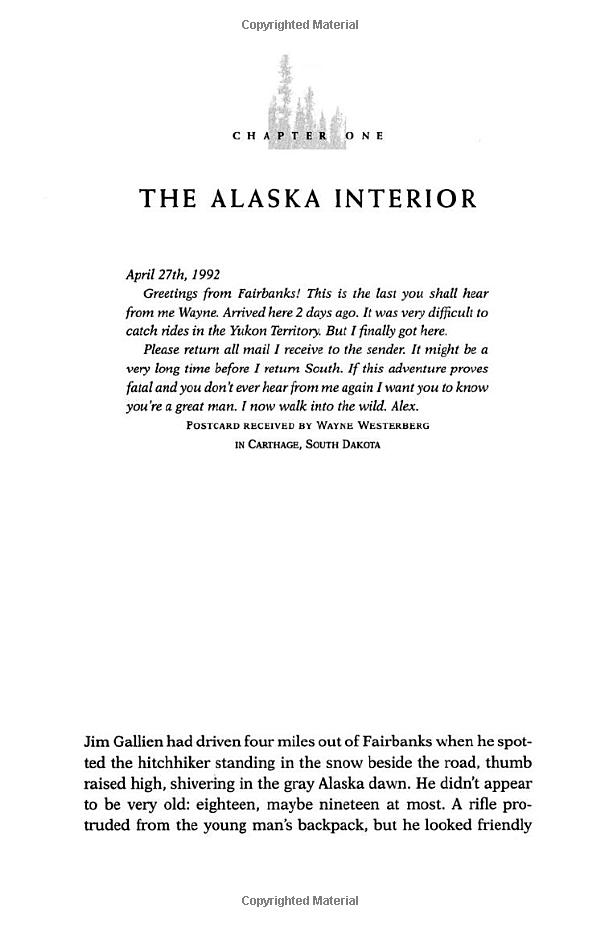

Into The Wild
McCandess had given $25,000 in savings to charity, abandoned his car and
most of his possessions, burned all the cash in his wallet, and invented a new life for himself. Not
long after, he was dead. Into the Wild is the mesmerizing, heartbreaking tale of an enigmatic young
man who goes missing in the wild and whose story captured the world’s attention.
Immediately after graduating from college in 1991, McCandless had roamed through the West and Southwest on a vision quest like those made by his heroes Jack London and John Muir. In the Mojave Desert he abandoned his car, stripped it of its license plates, and burned all of his cash. He would give himself a new name, Alexander Supertramp, and, unencumbered by money and belongings, he would be free to wallow in the raw, unfiltered experiences that nature presented. Craving a blank spot on the map, McCandless simply threw the maps away. Leaving behind his desperate parents and sister, he vanished into the wild.
Jon Krakauer constructs a clarifying prism through which he reassembles the disquieting facts of McCandless's short life. Admitting an interest that borders on obsession, he searches for the clues to the drives and desires that propelled McCandless.
When McCandless's innocent mistakes turn out to be irreversible and fatal, he becomes the stuff of tabloid headlines and is dismissed for his naiveté, pretensions, and hubris. He is said to have had a death wish but wanting to die is a very different thing from being compelled to look over the edge. Krakauer brings McCandless's uncompromising pilgrimage out of the shadows, and the peril, adversity, and renunciation sought by this enigmatic young man are illuminated with a rare understanding—and not an ounce of sentimentality. Into the Wild is a tour de force. The power and luminosity of Jon Krakauer's stoytelling blaze through every page.
Immediately after graduating from college in 1991, McCandless had roamed through the West and Southwest on a vision quest like those made by his heroes Jack London and John Muir. In the Mojave Desert he abandoned his car, stripped it of its license plates, and burned all of his cash. He would give himself a new name, Alexander Supertramp, and, unencumbered by money and belongings, he would be free to wallow in the raw, unfiltered experiences that nature presented. Craving a blank spot on the map, McCandless simply threw the maps away. Leaving behind his desperate parents and sister, he vanished into the wild.
Jon Krakauer constructs a clarifying prism through which he reassembles the disquieting facts of McCandless's short life. Admitting an interest that borders on obsession, he searches for the clues to the drives and desires that propelled McCandless.
When McCandless's innocent mistakes turn out to be irreversible and fatal, he becomes the stuff of tabloid headlines and is dismissed for his naiveté, pretensions, and hubris. He is said to have had a death wish but wanting to die is a very different thing from being compelled to look over the edge. Krakauer brings McCandless's uncompromising pilgrimage out of the shadows, and the peril, adversity, and renunciation sought by this enigmatic young man are illuminated with a rare understanding—and not an ounce of sentimentality. Into the Wild is a tour de force. The power and luminosity of Jon Krakauer's stoytelling blaze through every page.